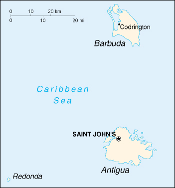

|
Antigua and Barbuda | |
| Introduction Geography People Government Economy Communications Transportation Military Transnational Issues | ||
|  | ||
| Antigua and Barbuda | Introduction | Top of Page |
| Background: | The islands of Antigua and Barbuda became an independent state within the British Commonwealth of Nations in 1981. Some 3,000 refugees fleeing a volcanic eruption on nearby Montserrat have settled in Antigua and Barbuda since 1995. |
| Antigua and Barbuda | Geography | Top of Page |
| Location: | Caribbean, islands between the Caribbean Sea and the North Atlantic Ocean, east-southeast of Puerto Rico |
| Geographic coordinates: | 17 03 N, 61 48 W |
| Map references: | Central America and the Caribbean |
| Area: |
total:
442 sq km (Antigua 281 sq km; Barbuda 161 sq km)
land: 442 sq km water: 0 sq km note: includes Redonda |
| Area - comparative: | 2.5 times the size of Washington, DC |
| Land boundaries: | 0 km |
| Coastline: | 153 km |
| Maritime claims: |
contiguous zone:
24 NM
continental shelf: 200 NM or to the edge of the continental margin exclusive economic zone: 200 NM territorial sea: 12 NM |
| Climate: | tropical marine; little seasonal temperature variation |
| Terrain: | mostly low-lying limestone and coral islands, with some higher volcanic areas |
| Elevation extremes: |
lowest point:
Caribbean Sea 0 m
highest point: Boggy Peak 402 m |
| Natural resources: | NEGL; pleasant climate fosters tourism |
| Land use: |
arable land:
18%
permanent crops: 0% permanent pastures: 9% forests and woodland: 11% other: 62% (1993 est.) |
| Irrigated land: | NA sq km |
| Natural hazards: | hurricanes and tropical storms (July to October); periodic droughts |
| Environment - current issues: | water management - a major concern because of limited natural fresh water resources - is further hampered by the clearing of trees to increase crop production, causing rainfall to run off quickly |
| Environment - international agreements: |
party to:
Biodiversity, Climate Change, Climate Change-Kyoto Protocol, Desertification, Endangered Species, Environmental Modification, Hazardous Wastes, Law of the Sea, Marine Dumping, Nuclear Test Ban, Ozone Layer Protection, Ship Pollution, Whaling
signed, but not ratified: none of the selected agreements |
| Antigua and Barbuda | People | Top of Page |
| Population: | 66,970 (July 2001 est.) |
| Age structure: |
0-14 years:
27.97% (male 9,527; female 9,203)
15-64 years: 67.15% (male 22,450; female 22,519) 65 years and over: 4.88% (male 1,360; female 1,911) (2001 est.) |
| Population growth rate: | 0.74% (2001 est.) |
| Birth rate: | 19.5 births/1,000 population (2001 est.) |
| Death rate: | 5.87 deaths/1,000 population (2001 est.) |
| Net migration rate: | -6.27 migrant(s)/1,000 population (2001 est.) |
| Sex ratio: |
at birth:
1.05 male(s)/female
under 15 years: 1.04 male(s)/female 15-64 years: 1 male(s)/female 65 years and over: 0.71 male(s)/female total population: 0.99 male(s)/female (2001 est.) |
| Infant mortality rate: | 22.33 deaths/1,000 live births (2001 est.) |
| Life expectancy at birth: |
total population:
70.74 years
male: 68.45 years female: 73.14 years (2001 est.) |
| Total fertility rate: | 2.31 children born/woman (2001 est.) |
| HIV/AIDS - adult prevalence rate: | NA% |
| HIV/AIDS - people living with HIV/AIDS: | NA |
| HIV/AIDS - deaths: | NA |
| Nationality: |
noun:
Antiguan(s), Barbudan(s)
adjective: Antiguan, Barbudan |
| Ethnic groups: | black, British, Portuguese, Lebanese, Syrian |
| Religions: | Anglican (predominant), other Protestant, some Roman Catholic |
| Languages: | English (official), local dialects |
| Literacy: |
definition:
age 15 and over has completed five or more years of schooling
total population: 89% male: 90% female: 88% (1960 est.) |
| Antigua and Barbuda | Government | Top of Page |
| Country name: |
conventional long form:
none
conventional short form: Antigua and Barbuda |
| Government type: | constitutional monarchy with UK-style parliament |
| Capital: | Saint John's |
| Administrative divisions: | 6 parishes and 2 dependencies*; Barbuda*, Redonda*, Saint George, Saint John, Saint Mary, Saint Paul, Saint Peter, Saint Philip |
| Independence: | 1 November 1981 (from UK) |
| National holiday: | Independence Day, 1 November (1981) |
| Constitution: | 1 November 1981 |
| Legal system: | based on English common law |
| Suffrage: | 18 years of age; universal |
| Executive branch: |
chief of state:
Queen ELIZABETH II (since 6 February 1952), represented by Governor General James B. CARLISLE (since NA 1993)
head of government: Prime Minister Lester Bryant BIRD (since 8 March 1994) cabinet: Council of Ministers appointed by the governor general on the advice of the prime minister elections: none; the monarch is hereditary; governor general chosen by the monarch on the advice of the prime minister; prime minister appointed by the governor general |
| Legislative branch: |
bicameral Parliament consists of the Senate (17-member body appointed by the governor general) and the House of Representatives (17 seats; members are elected by proportional representation to serve five-year terms)
elections: House of Representatives - last held 9 March 1999 (next to be held NA March 2004) election results: percent of vote by party - NA%; seats by party - ALP 12, UPP 4, independent 1 |
| Judicial branch: | Eastern Caribbean Supreme Court (based in Saint Lucia; one judge of the Supreme Court is a resident of the islands and presides over the Court of Summary Jurisdiction) |
| Political parties and leaders: | Antigua Labor Party or ALP [Lester Bryant BIRD]; Barbuda People's Movement or BPM [Thomas H. FRANK]; United Progressive Party or UPP [Baldwin SPENCER] (a coalition of three opposition parties - United National Democratic Party or UNDP, Antigua Caribbean Liberation Movement or ACLM, and Progressive Labor Movement or PLM) |
| Political pressure groups and leaders: | Antigua Trades and Labor Union or ATLU [William ROBINSON]; People's Democratic Movement or PDM [Hugh MARSHALL] |
| International organization participation: | ACP, C, Caricom, CDB, ECLAC, FAO, G-77, IBRD, ICAO, ICFTU, ICRM, IFAD, IFC, IFRCS, ILO, IMF, IMO, Intelsat (nonsignatory user), Interpol, IOC, ITU, NAM (observer), OAS, OECS, OPANAL, UN, UNCTAD, UNESCO, UPU, WCL, WFTU, WHO, WIPO, WMO, WTrO |
| Diplomatic representation in the US: |
chief of mission:
Ambassador Lionel Alexander HURST
chancery: 3216 New Mexico Avenue NW, Washington, DC 20016 telephone: [1] (202) 362-5211 FAX: [1] (202) 362-5225 consulate(s) general: Miami |
| Diplomatic representation from the US: | the US does not have an embassy in Antigua and Barbuda (embassy closed 30 June 1994); the US Ambassador to Barbados is accredited to Antigua and Barbuda |
| Flag description: | red, with an inverted isosceles triangle based on the top edge of the flag; the triangle contains three horizontal bands of black (top), light blue, and white, with a yellow rising sun in the black band |
| Antigua and Barbuda | Economy | Top of Page |
| Economy - overview: | Tourism continues to be the dominant activity in the economy accounting directly or indirectly for more than half of GDP. The budding offshore financial sector has been seriously hurt by financial sanctions imposed by the US and UK as a result of the loosening of its money-laundering controls. The government has made efforts to comply with international demands in order to get the sanctions lifted. Antigua and Barbuda was listed as a tax haven by the OECD in 2000. The dual island nation's agricultural production is mainly directed to the domestic market; the sector is constrained by the limited water supply and labor shortages that reflect the pull of higher wages in tourism and construction. Manufacturing comprises enclave-type assembly for export with major products being bedding, handicrafts, and electronic components. Prospects for economic growth in the medium term will continue to depend on income growth in the industrialized world, especially in the US, which accounts for about one-third of all tourist arrivals. |
| GDP: | purchasing power parity - $533 million (1999 est.) |
| GDP - real growth rate: | 4.6% (1999 est.) |
| GDP - per capita: | purchasing power parity - $8,200 (1999 est.) |
| GDP - composition by sector: |
agriculture:
4%
industry: 12.5% services: 83.5% (1996 est.) |
| Population below poverty line: | NA% |
| Household income or consumption by percentage share: |
lowest 10%:
NA%
highest 10%: NA% |
| Inflation rate (consumer prices): | 1.6% (1999 est.) |
| Labor force: | 30,000 |
| Labor force - by occupation: | commerce and services 82%, agriculture 11%, industry 7% (1983) |
| Unemployment rate: | 7% (1999 est.) |
| Budget: |
revenues:
$122.6 million
expenditures: $141.2 million, including capital expenditures of $17.3 million (1997 est.) |
| Industries: | tourism, construction, light manufacturing (clothing, alcohol, household appliances) |
| Industrial production growth rate: | 6% (1997 est.) |
| Electricity - production: | 95 million kWh (1999) |
| Electricity - production by source: |
fossil fuel:
100%
hydro: 0% nuclear: 0% other: 0% (1999) |
| Electricity - consumption: | 88.4 million kWh (1999) |
| Electricity - exports: | 0 kWh (1999) |
| Electricity - imports: | 0 kWh (1999) |
| Agriculture - products: | cotton, fruits, vegetables, bananas, coconuts, cucumbers, mangoes, sugarcane; livestock |
| Exports: | $38 million (1998) |
| Exports - commodities: | petroleum products 48%, manufactures 23%, machinery and transport equipment 17%, food and live animals 4%, other 8% |
| Exports - partners: | OECS 26%, Barbados 15%, Guyana 4%, Trinidad and Tobago 2%, US 0.3% |
| Imports: | $330 million (1998) |
| Imports - commodities: | food and live animals, machinery and transport equipment, manufactures, chemicals, oil |
| Imports - partners: | US 27%, UK 16%, Canada 4%, OECS 3% |
| Debt - external: | $357 million (1998) |
| Economic aid - recipient: | $2.3 million (1995) |
| Currency: | East Caribbean dollar (XCD) |
| Currency code: | XCD |
| Exchange rates: | East Caribbean dollars per US dollar - 2.7000 (fixed rate since 1976) |
| Fiscal year: | 1 April - 31 March |
| Antigua and Barbuda | Communications | Top of Page |
| Telephones - main lines in use: | 28,000 (1996) |
| Telephones - mobile cellular: | 1,300 (1996) |
| Telephone system: |
general assessment:
NA
domestic: good automatic telephone system international: 1 coaxial submarine cable; satellite earth station - 1 Intelsat (Atlantic Ocean); tropospheric scatter to Saba (Netherlands Antilles) and Guadeloupe |
| Radio broadcast stations: | AM 4, FM 2, shortwave 0 (1998) |
| Radios: | 36,000 (1997) |
| Television broadcast stations: | 2 (1997) |
| Televisions: | 31,000 (1997) |
| Internet country code: | .ag |
| Internet Service Providers (ISPs): | 16 (2000) |
| Internet users: | 8,000 (2000) |
| Antigua and Barbuda | Transportation | Top of Page |
| Railways: |
total:
77 km
narrow gauge: 64 km 0.760-m gauge; 13 km 0.610-m gauge (used almost exclusively for handling sugarcane) |
| Highways: |
total:
1,165 km
paved: 384 km unpaved: 781 km (1999 est.) |
| Waterways: | none |
| Ports and harbors: | Saint John's |
| Merchant marine: |
total:
681 ships (1,000 GRT or over) totaling 4,070,390 GRT/5,289,904 DWT
ships by type: bulk 15, cargo 424, chemical tanker 10, combination bulk 4, container 176, liquefied gas 4, multi-functional large-load carrier 6, petroleum tanker 2, refrigerated cargo 11, roll on/roll off 29 note: includes some foreign-owned ships registered here as a flag of convenience: Cyprus 2, Germany 4, Slovenia 2 (2000 est.) |
| Airports: | 3 (2000 est.) |
| Airports - with paved runways: |
total:
2
2,438 to 3,047 m: 1 under 914 m: 1 (2000 est.) |
| Airports - with unpaved runways: |
total:
1
under 914 m: 1 (2000 est.) |
| Antigua and Barbuda | Military | Top of Page |
| Military branches: | Royal Antigua and Barbuda Defense Force, Royal Antigua and Barbuda Police Force (includes Coast Guard) |
| Military expenditures - dollar figure: | $NA |
| Military expenditures - percent of GDP: | NA% |
| Antigua and Barbuda | Transnational Issues | Top of Page |
| Disputes - international: | none |
| Illicit drugs: | considered a minor transshipment point for narcotics bound for the US and Europe; more significant as a drug-money-laundering center |
{kind=link}
{kind=link}